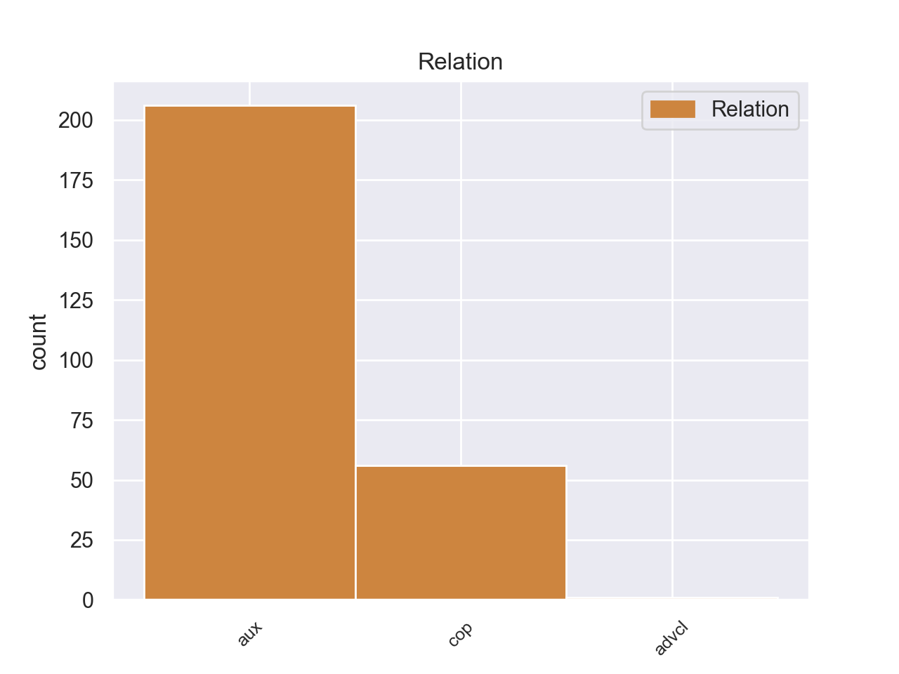
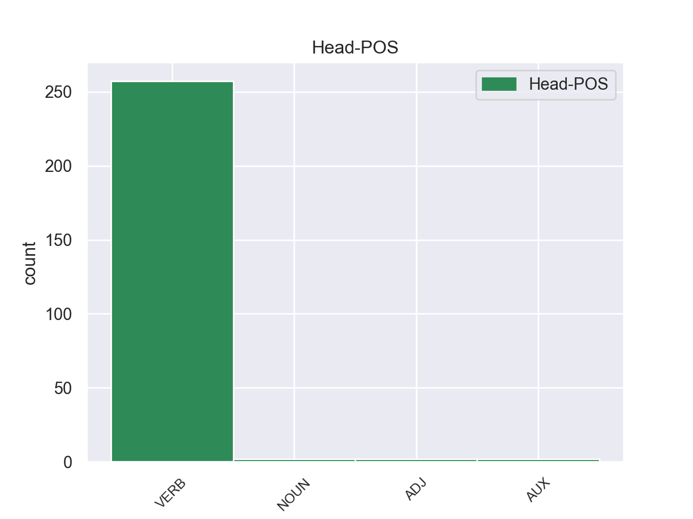
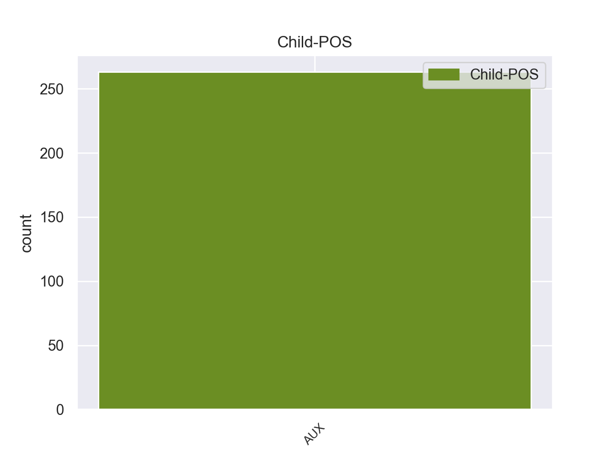

Distribution of features within this leaf



Agreement Rules sorted by frequency.
- When the dependent token is the auxiliary(aux) of the head token, and the dependent token is AUX.
1 Αυτό _ _ _ _ 0 _ _ _
2 μπορεί μπορεί AUX _ Aspect=Imp|Mood=Ind|Number=Sing|Person=3|Tense=Pres|VerbForm=Fin|Voice=Act 5 aux _ _
3 να _ _ _ _ 0 _ _ _
4 μην _ _ _ _ 0 _ _ _
5 οδηγήσει οδηγήσω VERB _ Aspect=Imp|Mood=Ind|Number=Sing|Person=3|Tense=Pres|VerbForm=Fin|Voice=Act 0 _ _ _
6 σ _ _ _ _ 0 _ _ _
7 τη _ _ _ _ 0 _ _ _
8 λήξη _ _ _ _ 0 _ _ _
9 του _ _ _ _ 0 _ _ _
10 εν _ _ _ _ 0 _ _ _
11 λόγω _ _ _ _ 0 _ _ _
12 ζητήματος _ _ _ _ 0 _ _ _
13 αλλά _ _ _ _ 0 _ _ _
14 , _ _ _ _ 0 _ _ _
15 σ _ _ _ _ 0 _ _ _
16 τη _ _ _ _ 0 _ _ _
17 μορφή _ _ _ _ 0 _ _ _
18 υπό _ _ _ _ 0 _ _ _
19 την _ _ _ _ 0 _ _ _
20 οποία _ _ _ _ 0 _ _ _
21 την _ _ _ _ 0 _ _ _
22 λάβαμε _ _ _ _ 0 _ _ _
23 , _ _ _ _ 0 _ _ _
24 αυτή _ _ _ _ 0 _ _ _
25 η _ _ _ _ 0 _ _ _
26 αίτηση _ _ _ _ 0 _ _ _
27 άρσης _ _ _ _ 0 _ _ _
28 της _ _ _ _ 0 _ _ _
29 ασυλίας _ _ _ _ 0 _ _ _
30 ήταν _ _ _ _ 0 _ _ _
31 , _ _ _ _ 0 _ _ _
32 κατά _ _ _ _ 0 _ _ _
33 την _ _ _ _ 0 _ _ _
34 άποψη _ _ _ _ 0 _ _ _
35 της _ _ _ _ 0 _ _ _
36 Επιτροπής _ _ _ _ 0 _ _ _
37 Νομικών _ _ _ _ 0 _ _ _
38 Θεμάτων _ _ _ _ 0 _ _ _
39 , _ _ _ _ 0 _ _ _
40 απαράδεκτη _ _ _ _ 0 _ _ _
41 , _ _ _ _ 0 _ _ _
42 άποψη _ _ _ _ 0 _ _ _
43 την _ _ _ _ 0 _ _ _
44 οποία _ _ _ _ 0 _ _ _
45 συνιστώ _ _ _ _ 0 _ _ _
46 σ _ _ _ _ 0 _ _ _
47 το _ _ _ _ 0 _ _ _
48 Σώμα _ _ _ _ 0 _ _ _
49 να _ _ _ _ 0 _ _ _
50 υιοθετήσει _ _ _ _ 0 _ _ _
51 . _ _ _ _ 0 _ _ _
1 Παρόμοιο _ _ _ _ 0 _ _ _
2 καθεστώς _ _ _ _ 0 _ _ _
3 επιδιώκουν _ _ _ _ 0 _ _ _
4 και _ _ _ _ 0 _ _ _
5 οι _ _ _ _ 0 _ _ _
6 πόλεις _ _ _ _ 0 _ _ _
7 σ _ _ _ _ 0 _ _ _
8 τα _ _ _ _ 0 _ _ _
9 ανατολικά _ _ _ _ 0 _ _ _
10 της _ _ _ _ 0 _ _ _
11 Λιβύης _ _ _ _ 0 _ _ _
12 , _ _ _ _ 0 _ _ _
13 οι _ _ _ _ 0 _ _ _
14 οποίες _ _ _ _ 0 _ _ _
15 είναι είμαι AUX _ Aspect=Imp|Mood=Ind|Number=Plur|Person=3|Tense=Pres|VerbForm=Fin|Voice=Pass 16 cop _ _
16 πλούσιες πλούσιες VERB _ Aspect=Imp|Mood=Ind|Number=Plur|Person=3|Tense=Pres|VerbForm=Fin|Voice=Act 0 _ _ _
17 σε _ _ _ _ 0 _ _ _
18 κοιτάσματα _ _ _ _ 0 _ _ _
19 πετρελαίου _ _ _ _ 0 _ _ _
20 . _ _ _ _ 0 _ _ _
1 Σύμφωνα _ _ _ _ 0 _ _ _
2 με _ _ _ _ 0 _ _ _
3 πληροφορίες _ _ _ _ 0 _ _ _
4 , _ _ _ _ 0 _ _ _
5 μονάχα _ _ _ _ 0 _ _ _
6 την _ _ _ _ 0 _ _ _
7 Παρασκευή _ _ _ _ 0 _ _ _
8 σκοτώθηκαν _ _ _ _ 0 _ _ _
9 31 _ _ _ _ 0 _ _ _
10 άτομα _ _ _ _ 0 _ _ _
11 ( _ _ _ _ 0 _ _ _
12 ενώ _ _ _ _ 0 _ _ _
13 συνολικά _ _ _ _ 0 _ _ _
14 φαίνεται φαίνεται AUX _ Aspect=Imp|Mood=Ind|Number=Sing|Person=3|Tense=Pres|VerbForm=Fin|Voice=Act 16 advcl _ _
15 πως _ _ _ _ 0 _ _ _
16 σκοτώθηκαν σκοτώθηκαν VERB _ Aspect=Imp|Mood=Ind|Number=Plur|Person=3|Tense=Pres|VerbForm=Fin|Voice=Pass 0 _ _ _
17 37-40 _ _ _ _ 0 _ _ _
18 άτομα _ _ _ _ 0 _ _ _
19 ) _ _ _ _ 0 _ _ _
20 κατά _ _ _ _ 0 _ _ _
21 τη _ _ _ _ 0 _ _ _
22 διάρκεια _ _ _ _ 0 _ _ _
23 80 _ _ _ _ 0 _ _ _
24 ανεμοστρόβιλων _ _ _ _ 0 _ _ _
25 , _ _ _ _ 0 _ _ _
26 οι _ _ _ _ 0 _ _ _
27 οποίοι _ _ _ _ 0 _ _ _
28 έπληξαν _ _ _ _ 0 _ _ _
29 τις _ _ _ _ 0 _ _ _
30 κεντρικές _ _ _ _ 0 _ _ _
31 πολιτείες _ _ _ _ 0 _ _ _
32 των _ _ _ _ 0 _ _ _
33 ΗΠΑ _ _ _ _ 0 _ _ _
34 την _ _ _ _ 0 _ _ _
35 Παρασκευή _ _ _ _ 0 _ _ _
36 . _ _ _ _ 0 _ _ _
Disagree Examples:
1 Θα _ _ _ _ 0 _ _ _
2 έπρεπε πρέπει AUX AUX Aspect=Imp|Mood=Ind|Number=Sing|Person=3|Tense=Past|VerbForm=Fin|Voice=Act 4 aux _ _
3 να _ _ _ _ 0 _ _ _
4 περνούν περνώ VERB VERB Aspect=Imp|Mood=Ind|Number=Plur|Person=3|Tense=Pres|VerbForm=Fin|Voice=Act 0 _ _ _
5 τον _ _ _ _ 0 _ _ _
6 περισσότερο _ _ _ _ 0 _ _ _
7 χρόνο _ _ _ _ 0 _ _ _
8 τους _ _ _ _ 0 _ _ _
9 εδώ _ _ _ _ 0 _ _ _
10 . _ _ _ _ 0 _ _ _
1 Το _ _ _ _ 0 _ _ _
2 Ευρωπαϊκό _ _ _ _ 0 _ _ _
3 Συμβούλιο _ _ _ _ 0 _ _ _
4 του _ _ _ _ 0 _ _ _
5 Λάκεν _ _ _ _ 0 _ _ _
6 αξιολόγησε _ _ _ _ 0 _ _ _
7 τις _ _ _ _ 0 _ _ _
8 προσπάθειες _ _ _ _ 0 _ _ _
9 της _ _ _ _ 0 _ _ _
10 Τουρκίας _ _ _ _ 0 _ _ _
11 και _ _ _ _ 0 _ _ _
12 διαπίστωσε _ _ _ _ 0 _ _ _
13 ότι _ _ _ _ 0 _ _ _
14 η _ _ _ _ 0 _ _ _
15 χώρα _ _ _ _ 0 _ _ _
16 έχει έχει AUX _ Aspect=Imp|Mood=Ind|Number=Sing|Person=3|Tense=Pres|VerbForm=Fin|Voice=Act 17 aux _ _
17 έρθει έρθει VERB _ Aspect=Imp|Mood=Ind|Number=Sing|Person=3|Tense=Past|VerbForm=Fin|Voice=Act 0 _ _ _
18 πιο _ _ _ _ 0 _ _ _
19 κοντά _ _ _ _ 0 _ _ _
20 σ _ _ _ _ 0 _ _ _
21 τον _ _ _ _ 0 _ _ _
22 στόχο _ _ _ _ 0 _ _ _
23 της _ _ _ _ 0 _ _ _
24 ένταξής _ _ _ _ 0 _ _ _
25 της _ _ _ _ 0 _ _ _
26 σ _ _ _ _ 0 _ _ _
27 την _ _ _ _ 0 _ _ _
28 Ευρωπαϊκή _ _ _ _ 0 _ _ _
29 Ένωση _ _ _ _ 0 _ _ _
30 . _ _ _ _ 0 _ _ _
1 Αναλυτικά _ _ _ _ 0 _ _ _
2 , _ _ _ _ 0 _ _ _
3 το _ _ _ _ 0 _ _ _
4 54% _ _ _ _ 0 _ _ _
5 των _ _ _ _ 0 _ _ _
6 αμερικανών _ _ _ _ 0 _ _ _
7 επιθυμεί _ _ _ _ 0 _ _ _
8 την _ _ _ _ 0 _ _ _
9 απόσυρση _ _ _ _ 0 _ _ _
10 των _ _ _ _ 0 _ _ _
11 αμερικανικών _ _ _ _ 0 _ _ _
12 στρατευμάτων _ _ _ _ 0 _ _ _
13 από _ _ _ _ 0 _ _ _
14 το _ _ _ _ 0 _ _ _
15 Αφγανιστάν _ _ _ _ 0 _ _ _
16 , _ _ _ _ 0 _ _ _
17 ακόμα _ _ _ _ 0 _ _ _
18 και _ _ _ _ 0 _ _ _
19 εάν _ _ _ _ 0 _ _ _
20 ο _ _ _ _ 0 _ _ _
21 αφγανικός _ _ _ _ 0 _ _ _
22 στρατός _ _ _ _ 0 _ _ _
23 δεν _ _ _ _ 0 _ _ _
24 είναι είμαι AUX _ Aspect=Imp|Mood=Ind|Number=Sing|Person=3|Tense=Pres|VerbForm=Fin|Voice=Pass 25 cop _ _
25 έτοιμος έτοιμος VERB _ Aspect=Imp|Mood=Ind|Number=Sing|Person=3|Tense=Past|VerbForm=Fin|Voice=Act 0 _ _ _
26 να _ _ _ _ 0 _ _ _
27 αναλάβει _ _ _ _ 0 _ _ _
28 τις _ _ _ _ 0 _ _ _
29 ευθύνες _ _ _ _ 0 _ _ _
30 του _ _ _ _ 0 _ _ _
31 . _ _ _ _ 0 _ _ _
1 Ο _ _ _ _ 0 _ _ _
2 Μεράχ _ _ _ _ 0 _ _ _
3 είχε είω AUX _ Aspect=Imp|Mood=Ind|Number=Sing|Person=3|Tense=Pres|VerbForm=Fin|Voice=Act 4 aux _ _
4 πει πει VERB _ Aspect=Perf|Mood=Ind|Number=Sing|Person=3|Tense=Past|VerbForm=Fin|Voice=Act 0 _ _ _
5 σ _ _ _ _ 0 _ _ _
6 τις _ _ _ _ 0 _ _ _
7 αρχές _ _ _ _ 0 _ _ _
8 ότι _ _ _ _ 0 _ _ _
9 θα _ _ _ _ 0 _ _ _
10 παραδινόταν _ _ _ _ 0 _ _ _
11 την _ _ _ _ 0 _ _ _
12 Τετάρτη _ _ _ _ 0 _ _ _
13 το _ _ _ _ 0 _ _ _
14 βράδυ _ _ _ _ 0 _ _ _
15 . _ _ _ _ 0 _ _ _
1 Ο _ _ _ _ 0 _ _ _
2 Μεράχ _ _ _ _ 0 _ _ _
3 είχε είχε AUX _ Aspect=Imp|Mood=Ind|Number=Sing|Person=3|Tense=Pres|VerbForm=Fin|Voice=Act 4 aux _ _
4 δηλώσει δηλώσει VERB _ Aspect=Perf|Mood=Ind|Number=Sing|Person=3|Tense=Past|VerbForm=Fin|Voice=Act 0 _ _ _
5 σ _ _ _ _ 0 _ _ _
6 την _ _ _ _ 0 _ _ _
7 Αστυνομία _ _ _ _ 0 _ _ _
8 ότι _ _ _ _ 0 _ _ _
9 « _ _ _ _ 0 _ _ _
10 σκόπευε _ _ _ _ 0 _ _ _
11 να _ _ _ _ 0 _ _ _
12 προβεί _ _ _ _ 0 _ _ _
13 σε _ _ _ _ 0 _ _ _
14 περισσότερες _ _ _ _ 0 _ _ _
15 δολοφονίες _ _ _ _ 0 _ _ _
16 για _ _ _ _ 0 _ _ _
17 να _ _ _ _ 0 _ _ _
18 κάνει _ _ _ _ 0 _ _ _
19 τη _ _ _ _ 0 _ _ _
20 Γαλλία _ _ _ _ 0 _ _ _
21 να _ _ _ _ 0 _ _ _
22 λυγίσει _ _ _ _ 0 _ _ _
23 » _ _ _ _ 0 _ _ _
24 και _ _ _ _ 0 _ _ _
25 είχε _ _ _ _ 0 _ _ _
26 πει _ _ _ _ 0 _ _ _
27 ότι _ _ _ _ 0 _ _ _
28 « _ _ _ _ 0 _ _ _
29 θέλει _ _ _ _ 0 _ _ _
30 να _ _ _ _ 0 _ _ _
31 προβεί _ _ _ _ 0 _ _ _
32 σε _ _ _ _ 0 _ _ _
33 αντίποινα _ _ _ _ 0 _ _ _
34 για _ _ _ _ 0 _ _ _
35 τους _ _ _ _ 0 _ _ _
36 θανάτους _ _ _ _ 0 _ _ _
37 παιδιών _ _ _ _ 0 _ _ _
38 Παλαιστινίων _ _ _ _ 0 _ _ _
39 σ _ _ _ _ 0 _ _ _
40 τη _ _ _ _ 0 _ _ _
41 Μέση _ _ _ _ 0 _ _ _
42 Ανατολή _ _ _ _ 0 _ _ _
43 » _ _ _ _ 0 _ _ _
44 , _ _ _ _ 0 _ _ _
45 ενώ _ _ _ _ 0 _ _ _
46 καταδίκασε _ _ _ _ 0 _ _ _
47 την _ _ _ _ 0 _ _ _
48 ανάμειξη _ _ _ _ 0 _ _ _
49 της _ _ _ _ 0 _ _ _
50 Γαλλίας _ _ _ _ 0 _ _ _
51 σ _ _ _ _ 0 _ _ _
52 το _ _ _ _ 0 _ _ _
53 Αφγανιστάν _ _ _ _ 0 _ _ _
54 . _ _ _ _ 0 _ _ _